Proprietary to General Electric
Direction 5193891-800, Rev# 5
LightSpeed 5.X Pro16 Limited Access Service Information (Adv)
Proprietary to General Electric |
| Last Revised: | 10 October 2008 |
This Load from Cold (LFC) procedure supports GOC3 and GOC4 GRE/Xtream Operator Console systems using this version of 07MW11.10 or upgrading from versions 06MW03.5 or 06MW29.7. It also supports upgrading from GOC1 (IRIX) and GOC2 (Linux-Pegasus) Operator Consoles to GOC3/4.
When loading software, this LFC document must be performed as written in its entirety to be successful (except for a DARC reload).
HiSpeed QX/i
LightSpeed 1.X
LightSpeed 2.X
LightSpeed 3.X (4- and 8-slice)
LightSpeed 4.X (16-slice)
LightSpeed 5.X Pro16 (80kW & 100kW) - MDAS & GDAS
LightSpeed 5.X RT (4 slice)
LightSpeed 5.X (4/8/16 slice) - MDAS & GDAS
BrightSpeed (4/8/16 slice)
| NOTE: | BrightSpeed Select (with glass tube) and LightSpeed 5.X RT (16 slice) systems are not supported with this software version. |
For a description of the procedural flow in this document, see Table 1.
5212704 - LightSpeed Xtream Console Operating System
Version - GEMS Linux 6.2.9 OS
5220445 - LightSpeed Applications Software DVD
Version 07MW11.10
5212235 - Xtream Serial-Over-LAN Service Software
Supports: DARC/VDARC/IG/VIG Westville or Jarrell hardware, and OS versions: 4.3.16 and 6.2.9
| NOTE: | The Xtream Serial-Over-LAN Service Software is used during the LFC if instructed via a pop-up message box. When unable to connect to the DARC Node via a telnet session (with the 'service cliservice start' enabled), this CD may be used to reload the BMC information. This CD is loaded directly into the DARC Node. Then press the reset (or cycle power) at the front panel of the DARC Node as required. This CD will auto-eject when the SOL load process is complete (approximately 1-2 minutes). |
HP xw8200 BIOS Floppy Set - 5191796-3
5191796 BIOS 2.10 Floppy
5191796-2 BIOS 2.10 Configuration Floppy
HP xw8000 BIOS Floppy: 5138295 BIOS 1.13 Floppy
| NOTE: | The Service Pack software may or may not be included with the initial release. Service Packs are released as required. Always use the latest revision of the Service Pack. |
| Do not load this software on a PET system. Do not load this software on a CT GOC1 (IRIX, Pegasus) or GOC2 (Linux, Pegasus) Operator Console. This software requires the presence of a DARC Node subsystem. | |
The following information must be recorded, it is NOT saved on System State:
If you choose, you may start the Save System State process (see Table 2) at this time.
Verify and record specific system information in Section 1 of the 07MW11.10 GRE/Xtream Operator Console Information Sheet.
With Application Software up, record the [User Prefs] Screen and Film Large Font Annotation Groups selections. Refer to Section 14 to understand the information that may need to be gathered.
Select Autovoice Volume (Toolchest, upper right corner) and record the Left Value and Right Value settings. The path to view the all audio settings is as follows: {ctuser@hostname} audioSetting (PCM2 info is the left and right value as described above).
Record DICOM information as required in Section 3 of the 07MW11.10 GRE/Xtream Operator Console Information Sheet
Open a Unix Shell and type:{ctuser@hostname} installOptions
Check the box on the Information Sheet next to each Option currently loaded on the system.
If Exam Split is present, perform the following to determine ves or hes.
{ctuser@hostname} su -
Password:<password>
| NOTE: | If the Password has not been modified by the site and is not known, the correct course of action is to contact Local GE Service. |
[root@hostname] ls -l ~ctuser/ves/.hesMode
| NOTE: | There are no spaces in the phrase ~ctuser/ves/.hesMode. |
Examine the results. If the results are similar to:
-rw-r--r-- 1 ctuser users 0 Apr 3 12:43 /usr/g/ctuser/ves/.hesMode
then HES (Hard Exam Split) mode is configured.
If the results show “No such file or directory,” then VES (Virtual Exam Split) mode is configured. Record Exam Split Mode (Hard or Virtual). This info will be used during the LFC Options Installation.
If you have the ConnectPro option and use PPS, perform the following (refer to example):
{ctuser@hostname} cd /usr/g/ctuser/resources/pps
{ctuser@hostname} head -12 ppsserver.cfg
Output Example:
PPS_REMOTE_AE_LIST =
{
# AppTitle,IPAddress,IPPortNo,HostName;
DICOM_TEST_RMT,3.70.204.86,4500,Default;
Record the PPS Information per the following EXAMPLE:
| # AppTitle | IPAddress | IPPortNo | HostName |
| DICOM_TEST_RMT | 3.70.204.86 | 4500 | Default |
Record the AppTitle
Record the IPAddress
Record the IPPortNo
Record the HostNameRecord
The information in this section IS SAVED to System State. It is up to the user to decide if the information gathered in this section is needed. The information may be gathered electronically and placed onto media (floppy, CD, flash drive).
SCSI Tower termination jumper must have been completed. If this has not been completed, the user may fail the Save/Restore System State process on older SCSI Towers.
Visually verify that the SCSI Tower DVD-RAM power is applied.
If applicable, verify that the SCSI Tower terminator LED is lit (located at the rear).
If a DASM is used on the system, verify that it is connected.
Verify that the Host Computer DVD-ROM and floppy drives do not have any media on them.
Record additional information in Section 2 of 07MW11.10 GRE/Xtream Operator Console Information Sheet.
If present, verify SDDA (GOC3 only) has its power LED lit.
If present, verify ICOM has its power LED lit. (See Illustration 1.)
Record the Tube Information in Section 4 of 07MW11.10 GRE/Xtream Operator Console Information Sheet. When multiple files exist, record information for a minimum of two years. Select the appropriate software step below.
(For 06MW03.X and 06MW29.7 Software) Open the Service icon. Select [Error Logs] and then [Tube Usage] . Select [Details] and record the following as required for each tube file applicable to the two-year rule on the Console Information Sheet:
Tube serial no.
Installed on
Last scan on
Tube mA (patient and non-patient)
Scan Seconds (patient and non-patient)
Total Patient Exams
Select [Back] for next tube as required.
Close the Tube Usage window when information gathering is complete.
(For 07MWxx.x Software) Open the Service icon. Select [Error Logs] and then [Tube Usage] . Select [Details] and record the following as required for each tube file applicable to the two-year rule on the Console Information Sheet:
Tube serial no.
Installed on
Last scan on
Exam Usage Total (patient and non-patient)
Click on [Advanced metric] reporting for next tube as required.
Tube mA Seconds (patient and non-patient)
Scan Seconds (patient and non-patient)
Select [Back] for next tube as required.
Close the Tube Usage window when information gathering is complete.
(For GOC1 (IRIX) and GOC2 (Linux-Pegasus) systems) Dismiss the Common Service Desktop.
The system state backup saves vital calibration and scanner files. Follow the appropriate procedures throughout this document precisely or valuable information may be lost. This process takes approximately 10 minutes for GOC3/4, but in some cases it may take up to 30 minutes. This process is more involved for GOC1 (IRIX) and GOC2 (Linux-Pegasus) upgrades.
Perform one of the following methods to Save System State, depending on current Operator Console type. A current version of the System State is a requirement for continuing with this LFC procedure.
For GOC1 (IRIX) systems, Save System State for Upgrading to Linux, see Table 3.
For GOC2 (Linux-Pegasus) systems, Save System State, see Table 4
For GOC1/GOC2 Console Upgrade Only - Install GRE/Xtream Console, see Table 5
Whenever the Host Computer LFC is performed, the DARC software must be loaded using the same software set version. Additionally, if the DARC Node is not loaded, ssh (Security Shell) issues will result in an Unknown Host failure.
| NOTE: | Before proceeding you must disconnect the console from the Hospital Network. Failure to do this may result in the console broadcasting traffic out to the entire Hospital network. |
| After each reboot during the software install process, an 'Unrecognized X-Ray Tube' message will be displayed (as shown in Tube Install Certification Tool - Screens), until the tube identity has been selected and 'Flash Download' has also been performed. The same “unrecognized x-ray tube” message will also be displayed on the CSD Homepage, until the ID and flash download are done. | |
Open a Unix Shell and become root:
{ctuser@hostname} su -
Password: <password>
| NOTE: | If the Password has not been modified by the site and is not known, the correct course of action is to contact Local GE Service. |
To determine the Host Computer BIOS version, type the following:
[root@hostname] dmidecode | grep Ver
Authorized BIOS versions
Version: JQ.W1.13US = 1.13 for xw8000
Version: 786B8 v2.10 = 2.10 for xw8200
Ensure that the Host Computer BIOS version is an authorized version as shown above.
If the Host BIOS version is not correct or if you suspect incorrect Host BIOS settings (changes specified by GE from default), follow the instructions for your specific Host type:
For HP xw8000, see PC BIOS Install & Setup for HP xw8000 Host Console. REQUIRED: Manually configure all BIOS settings at this time.
For HP xw8200, see PC BIOS Install & Setup for HP xw8200 Host Console. REQUIRED: The HP xw8200 has the ability to place the BIOS 2.10 Configuration Floppy into the Host and configure all BIOS settings without any manual entries. Load the BIOS 2.10 Configuration Floppy at this time.
| Potential for Loss of Patient Data. | |
| This procedure will overwrite existing data. | |
| Before performing this procedure, ensure that the Archive and Network Queues are empty of patient data. If they are not, DO NOT proceed until it can be verified that all patient data has been archived. |
| NOTE: | During the OS load you need to select "ignore" twice when
it complains about I/O errors with a SCSI device. These messages
may occur with systems without a DASM: Input/output error during read on /dev/sd? Input/output error during write on /dev/sd? |
Unplug the Hospital Network (HSP) cable from rear Console bulkhead. (See Illustration 2.)
Label the cable as HSP and set it aside during LFC.
Remove the Operator Console's front cover.
If present, ensure that the DARC/IG Troubleshooting Video Cable is not connected to the Scan or Display Monitors during the software load.
Insert the OS DVD into the tray on Host Computer DVD-ROM Drive.
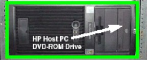
| NOTE: | The Host Computer must be powered ON to insert the disk. |
Select one of the following methods to re-power the Operator Console:
If Applications are up select the [Shutdown] icon. On the Attention screen ( Illustration 3), select [Restart] , then [OK] .
If Application Software is down, at the Toolchest open a Unix Shell and type:
{ctuser@hostname} halt
The Operator Console monitor will display a System halted message when it is acceptable to power OFF the Operator Console. (See Note.)
| NOTE: | (For 06MW03.X Software) Wait 1-2 minutes after the “System halted” message appears, to allow the VDARC Node to properly power-down. SW release 06MW29.7 and later has corrected this issue. |
Power OFF the Operator Console at the front panel switch. (See Illustration 4.)
(For GOC3 Consoles) The Trackball USB-to-PS2 converter must be Part # 5195935 (provided with FMI 25389). This prevents problems with the OS load (mouse confusion) on the Host.
Wait 30 seconds to allow the disk drive to settle; then power ON the Operator Console at the front panel switch.
As the Host Computer restarts, the booting process messages appear. After the booting process completes, the boot: prompt appears. (The OS is a bootable media.)
At the boot prompt, type the following depending on system type:
(For English Keyboard only) GEHC2
(For International Command only) iGEHC2
| NOTE: | If a DASM is connected, select [Ignore] as required for IO errors. If the boot: prompt does not appear, then either the DVD is unusable or the Console Operating System Media is not installed in the drive. Typing GEHC (or iGEHC) results in both scan and display being on one monitor and requires a LFC. Typing any other command not listed in this procedure will result in a LFC. |
After approximately 20 minutes, the OS is loaded on the Host Computer. A window appears.
Remove the OS DVD from the Host Computer DVD-ROM drive when it ejects and close the tray.
Press <Enter> to reboot.
The Host Computer begins to reboot.
| NOTE: | Do not insert the Applications Software DVD into the Host Computer until the Host has completed rebooting and the [root@localhost ~] window appears, displaying the prompt:[root@localhost ~]. (See Illustration 5.) |
| NOTE: |
(For 6.2.9 OS)
The bootup screen changes
for each OS version. The 6.2.9 OS Boot-up Screen display (shown below)
contains output that may be misunderstood as a Host hardware or software
issue. For example, in the screen below refer to “PCI:
Failed to allocate mem resource #6” and “FATAL: Error inserting...” errors). These are normal
typical messages. Additionally, whenever the HSP Ethernet cable is
disconnected from the Operator Console bulkhead, Firewall PNF errors
may occur. Ignore these errors. Any other errors should be investigated. 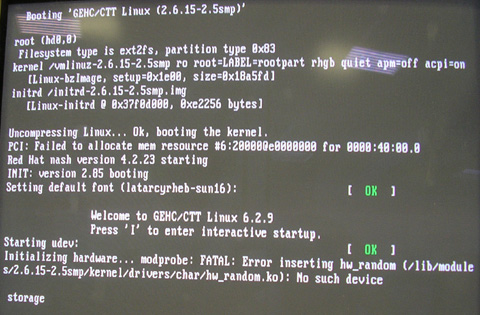 |
After the Host Computer reboots, verify that a window appears on the Display monitor with the prompt: [root@localhost ~]#.
In the root@localhost ~ window, verify 3 Host hard drives and the SCSI Tower MOD and DVD are present (for a total of 5 items listed for xw8000 and xw8200).
[root@localhost ~]# cat /proc/scsi/scsi
All Applications software will be loaded to the Host Computer during this process.
| NOTE: | (For GOC3 Consoles) If a mouse hang occurs after the OS load on the Host, install the correct Trackball USB to PS2 converter and reset the Host to continue. GOC3 Operator Consoles must use Part # 5195935 for the Trackball USB to PS2 converter. This converter is located at the rear of the Host's USB ports. |
Open the tray on the Host Computer DVD-ROM Drive.
Insert the Applications DVD into the DVD-ROM Drive and close the tray.
Select the [Run Command] in the Warning box. (See Illustration 6.)
| NOTE: | If the Warning pop-up box does not appear after two minutes,
type the following in the Welcome box pop-up: root install Type the following in the terminal window with the Application media still installed: mount /media/cdrom /media/cdrom/autorun |
Select the [Load] button in the CT Software Installation window. (See Illustration 7.)
System State decision for the Install INFO decision box. (See Illustration 8.)
If you do not have a valid System State, select [No] .
Insert the System State DVD into the SCSI Tower if you have a valid System State. Wait until the DVD LED stops blinking, then select [Yes] or [OK] as needed. Another Install INFO box appears. (See Illustration 9.)
If you selected [Yes] , select [ok] .
Select the [System] tab. The System Settings screen appears. (See Illustration 10.)
Verify that the:
Next Patient Exam # is the value restored from System State. Otherwise, set it to 1.
Proper Time Zone is selected. Failure to set this at this point will result in time jump issues.
Select the [Preferences] tab. The Preferences Settings screen appears. (See Illustration 11.)
| NOTE: | The current illustration for the Preferences tab will not show the additional languages until after Service Pack 2 (or greater) is loaded. At that time the screen will appear as in Illustration 12. |
Input the correct:
Units for patient weight
Language
AutoVoice Language
Date Format
Time Format
Preference for Modified in Room Start
| NOTE: | Modified in Room Start is normally Off, unless the site is in Japan and/or the customer has requested that this be turned On. |
Preference for HIPAA Present
| NOTE: | HIPAA Present is normally Off, unless the customer requests HIPPA to be On. |
Site preference for Dose Information Display
| NOTE: | Dose Information Display is for the site to use in monitoring calculated Patient Dose. |
[On] (full CTDiw Display)
[On without Total DLP] (no Dose Length Product Display), or
[Off] (no CTDIw Display)
Preferred kVs
Target Noise Index Table
Select the [Hardware] tab. The Main Hardware screen appears. (See Illustration 13.)
Click on the Hardware Settings (orange button) to access the Select hardware configuration.screen. (See Illustration 14.)
Click on [CT ONLY] . Then, depending on the DAS / Detector rating plate type, click on one of the following: non-VCT hardware configuration selections.
Select [OK] to exit hardware configuration.
On the Hardware Settings screen, click on the proper Table Type. (See example screen in Illustration 15.)
| NOTE: | Check the label/rating plate at the front bottom of the Table ( Illustration 16), closest to the Gantry (by the MTCB) and determine the Table Type. |
Select proper PDU type.
Click on the configured (0, 1, or 3) Number of IGs. (See Illustration 15.)
| NOTE: | SDAS 4-slice systems, MDAS 4-slice / 8-slice systems cannot upgrade from the 1 single/standard IG Node to the 3 IG Node upgrade option. BrightSpeed 4/8/16 systems may be configured with 0 IG’s, 1 IG, or 3 IG’s depending on the specific Console type. |
Select the [Network] tab. The Network Settings screen appears. (See Illustration 17.)
| NOTE: | The current illustration for the Network Settings tab will not show the Station Name until after Service Pack 2 (or greater) is loaded. At that time the screen will appear as in Illustration 18. |
Gateway Parameters:
Suite Name - The Suite Name must utilize uppercase letters. It must start with a letter, followed by 3 alphanumeric characters. The total must be four characters long. It is suggested that you choose CT01 for the first scanner (CT02....), unless a different Suite Name is required.
Station Name - The Station Name identifies the text that is stored in the DICOM attribute “Station Name” (DICOM TAG 0008,1010) in all CT images created. Some PACS systems may use the Station Name attribute or system tracking for identification of the scanner where the CT images were generated. Typically, the Host Name and Station Name are the same.
| NOTE: | The Station Name defaults to the Host Name if it is left blank. If entered, it:
|
Host Name
| NOTE: | The Host Name identifies the hostname
and AE Title of the scanner.
|
IP Address - Site supplied
If the supplied hospital IP Address starts with 172.16.0.xx, click on Advanced Options. Click on the Change DARC Subnet? box, then click on: 169.254.0. Do not input a User defined IP address unless specified by GE Healthcare Service.
| NOTE: | Sites requiring a User Defined IP address will be required to load the SOL CD during the DARC Node software load process. After the LFC procedure is completed, a reconfig (as root) must be performed and the DARC Subnet address can be modified. Additionally, the System State should be saved. |
To set the DARC subnet back to default value of 172.16.0.x, deselect the Change DARC Subnet? box.
Net Mask - Site supplied address.
| NOTE: | If the hospital backbone IP address is 192.9.220.xx, the Net Mask must be set to 255.255.255.252. |
Broadcast Address - Site supplied address
Default Gateway - Site supplied address
If your customer has AW Direct Connect, click on Enable AW DirectConnect?. Insert any information as required.
| NOTE: | Complete the LFC, configure AW Direct Connect in Section 17.3. (Do not configure AW Direct Connect now.) |
Verify with customer’s network administrator if they have NIS. If they do, ensure the [Advanced Options] and [Use NIS?] boxes are checked. If they don’t have NIS, ensure that these selections are not checked.
Domain Name: add your name here (get name from customer’s network administrator).
IP Address of Server: add your IP address here (get IP address from customer’s network administrator).
If your customer wants to synchronize the system time to their NTP server, then select Enable Network Time Protocol, and enter the Primary Server IP address.
Change DARC Subnet? (under Advanced Options, see the IP Address Gateway Parameter for specific information. This box is normally not selected.
| NOTE: | If the [Accept] tab is selected with the <Num Lock> hard key activated, load failures may result. |
Verify that the <Num Lock> hard key on the keyboard is not active. If it is, deselect it to enable the [Accept] tab in the next step.
| NOTE: | Make sure the <Num Lock> button on the keyboard is not active. If it is, deselect it and then select the [Accept] button in the next step. Failure to deactivate the Num Lock results in load issues. |
Select the [Accept] tab at the right corner of the User Interface.
CAUTION: FAILURE TO SELECT THE CORRECT DAS HARDWARE CONFIGURATION WILL RESULT IN SYSTEM DOWNTIME AND DCB CIRCUIT BOARD REPLACEMENT. THIS FAILURE WILL OCCUR AFTER THE FLASH DOWNLOAD PROCEDURE FLASHES THE FIRMWARE. THIS ISSUE CAN AFFECT ANY MDAS OR GDAS TYPE SYSTEM WHEN FLASHED WITH THE WRONG DAS HARDWARE CONFIGURATION FIRMWARE.
An Install INFO Acceptance window appears. (See Illustration 19)
Select [Yes] , if correct.
| NOTE: | If the information is not correct, select [No] . Selecting [No] returns you to the Hardware tab. Select [Hardware Settings] and select the correct hardware configuration from the displayed list. Select the [Accept] tab again, followed by the [Yes] button on the Install INFO hardware box to accept the new hardware configuration. |
A no-action- required pop-up message appears in approximately 1 minute:
Please make sure the CT application media is in the drive - the system will be rebooted.
No action is required for this pop-up. The system will automatically reboot after approximately 10 seconds if the [OK] button is not selected.
| NOTE: | Do not remove the Applications Software DVD from the Host Computer until instructed to do so. |
After the system reboots, an sh window appears. (See Illustration 20.) The Apps software load begins.
After approximately 10-15 minutes, the system prompts for reboot (see Illustration 21.) Answer [Yes] . The system is going down for reboot NOW.
| NOTE: | During the reboot, a message may appear to the effect that the system was not able to determine what the tube type was and to run the TIC tool. This message should be ignored at this time. |
After approximately 3 minutes, the CT Software Auto-Start Disabled pop-up box appears. (See Illustration 22.) Select [OK] .
Remove the Applications Software DVD from the Host Computer by pressing the button on the DVD-ROM drive to open the tray.
Close the Host drive tray.
When the Host Computer has completed its reboot, you may continue.
This section describes the DARC Software Load Process. This section of the LFC is also used for DARC reload and replacement. In the reload case, if any Service Packs have been released for this version of software, refer to included instructions and load the Service Pack after the DARC software load if necessary.
Open a Unix Shell and type the following to determine Host Computer software information:
{ctuser@hostname} swhwinfo
07MW11.10<hardware revision info here>
{ctuser@hostname} swhwinfo –os for OS version
Release: GEHC/CTT Linux 6.2.9
Built: Wed Jan 3 11:05:37 CST 2007
Confirm that the Host OS and Apps results match the OS and Apps software versions to be loaded for the DARC Node.
Log into the DARC and determine hardware type (Westville = WV or Jarrell = JR):
{ctuser@hostname} ipmitool -H darc -P '' fru | grep -i "Board Product"
(Example) Board Product : SE7520JR23
Board Product : Intel(R) Management Module - Professional Edition
To determine DARC Node type, view the first line at the top of the response. (See examples below.)
Westville DARC Nodes will contain a WV string (example, SWV25)
Jarrell DARC Nodes will contain a JR string (example, SE7520JR23)
Westville DARC2 Node (Front)

Jarrell DARC2 Node (Front)
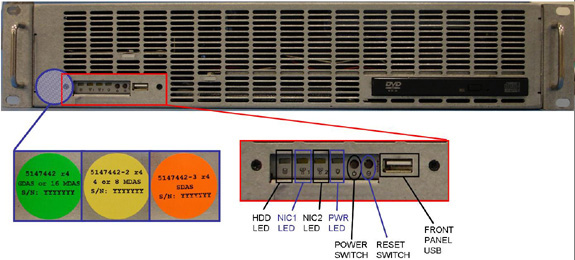
If the DARC is Westville, proceed to Section 8.3.
If the DARC is Jarrell, proceed to Section 8.4.
Only Westville DARC and DARC2 Nodes require DARC Node BIOS to be enabled and then restored. Jarrell DARC Nodes DO NOT require a DARC BIOS Boot Order change before or after a software load (unless the vendor shipped the BIOS with incorrect settings or the DARC has been previously used and restocked).
This section describes the steps necessary to change the Westville DARC Node BIOS to Enable the OS/Apps load from the Host Computer. The Westville DARC Node BIOS Boot Order is modified for Enable before the DARC Node OS load, and must be returned to final operational Restore settings after the DARC Node load. Failure to return the Westville DARC Node BIOS Boot Order to the Restore settings after the load process is complete may result in DARC boot issues (DARC Node fails to boot up) that can occur randomly at any time.
| NOTE: | If the DARC OS load fails, a pop-up may appear stating that the DARC BIOS must be checked. Try reloading the SOL CD. After the BIOS is checked, if the DARC load continues to fail, determine if the problem is the Ethernet cable, Host NIC, or DARC Node (look for the LAN LED activity on the DARC). |
Open a Unix Shell and type the following:
{ctuser@hostname} su -
Password: <password>
| NOTE: | If the Password has not been modified by the site and is not known, the correct course of action is to contact Local GE Service. |
[root@hostname]service cliservice start
[root@hostname] telnet localhost 623
Server:darc
Username:<Enter>
Password:<Enter>
Login successful
dpccli> reset
ok
dpccli> console
| NOTE: | A slight delay here is normal. Watch the screen for the [F2] prompt. If the prompt is missed for entering the BIOS, close the Telnet session and retry. |
Interrupt the DARC boot process to enter the BIOS Setup mode. When the message “Press <F2> to enter setup” appears, press [F2].
| NOTE: | <F2> must be selected in a timely manner or the process to access F2 will need to be repeated. There will be a short delay before the DARC BIOS setup screen is displayed. |
For DARC Node BIOS screen setup instructions for Westville, refer to Change DARC BIOS Boot Order - Enable Load.
Verify that the initial Boot device Priority for OS load is set as shown below.
IBA 1.1.08 Slot 0338
ATAPI CD-ROM
Hard Drive
IBA 1.1.08 Slot 0339
Removable Devices
| NOTE: | For Jarrell DARC Nodes, refer to Change DARC BIOS Boot Order - Restore Settings, Step 3. |
After saving the DARC BIOS, the BIOS SETUP UTILITY window should disappear (within approximately one minute) and the DARC will begin to reboot. If this window does not disappear within a minute or so, close the window and attempt to load the DARC Node. The DARC Node may require a reset.
If necessary, close the Terminal Window.
No DVD is required during a LFC.. OS will be loaded from the Host Computer (initial OS load) onto the DARC Node as long as the DARC BIOS Order is configured properly for your DARC Node hardware type. The Apps will be loaded at this time also. This process takes approximately 30 - 35 minutes.
A DVD may be required for Reloading / Replacement of a DARC Node. The user must perform the [root@hostname scripts] ./load_darc_subsystem -restart for all DARC Node replacements or any DARC Node reloads.
Open a Unix Shell and type the following:
{ctuser@hostname} su -
Password:<password>
| NOTE: | If the Password has not been modified by the site and is not known, the correct course of action is to contact Local GE Service. |
[root@hostname] cd /usr/g/scripts
| NOTE: | The user must perform the [root@hostname scripts] ./load_darc_subsystem -restart for all DARC Node replacements or any DARC Node reloads that may experience an unexpected failure. An Attention box may appear instructing the user to insert either the OS DVD or the Apps DVD. It does not matter which media DVD you insert into the Host Computer; however, the Apps DVD is preferred if it is known to be good (not a bootable DVD). If the DARC OS or Application software is corrupt and requires a reload, then a LFC must be performed. |
Perform one of the following commands as required:
For all full LFCs:
[root@hostname scripts] ./load_darc_subsystem
For DARC Node Reloads, Replacements, or when load failures occur:
[root@hostname scripts] ./load_darc_subsystem -restart
An Attention window appears. (See Illustration 23.)
Follow the instructions in the Attention window.
Then select [OK] .
| NOTE: | SOL Service ( Illustration 24) and DARC BIOS ( Illustration 25) error and attention boxes may appear. |
The Unix Shell will display output during the 30 minute DARC load. Example output is as follows:
[root@hostname
[load_darc_subsystem] [Start time] Loading the darc subsystem(OS + Apps) takes 30 minutes
[load_darc_subsystem] [Start time] Loading the darc OS
[load_darc_subsystem] [Time] Loading the darc OS is complete
[load_darc_subsystem] [Time] Loading the darc apps
[load_darc_subsystem] [End time] Loading the darc is complete
[load_darc_subsystem] [End time] Load started: (Date) (Start time)
[load_darc_subsystem] [End time] Load ended: (Date) (End time)
[load_darc_subsystem] [End time] Finished loading darc subsystem.
[root@hostname]#
Additionally, an sh window displays the OS and Apps load messages.
| NOTE: | The DARC Load should complete in approximately 30 to 35
minutes. It will stop prematurely ONLY if an error is encountered.
An Error Dialog Box should appear with a brief description of the
error. Select [OK] after performing the instructions
displayed on the Monitor. If failures occur during ./load_darc_subsystem, perform the ./load_darc_subsystem -restart command. If failures occur during ./load_darc_subsystem -restart, perform the ./start_darcOS command with the OS DVD inserted in the Host Computer. Then, perform the ./start_darc_load command to load the Application software onto the DARC. If the two previous commands fail and the issue is thought to be software, perform a full LFC. |
| NOTE: | A %done status is displayed during the DARC OS load. This is a timed countdown sequence and does not provide status of the actual load process. |
When the DARC load has completed, the sh window will close. The Unix Shell provides the status of the load process.
Verify the OS and Application Software has loaded on the DARC.
After the DARC is rebooted, open a Unix Shell and type the following:
{ctuser@hostname} rsh darc
{ctuser@darc} exit
If the prompt {ctuser@darc} does not appear, the DARC Node may require a reload or a hardware failure may be present. Verify the remote shell is successful. If rsh fails, try the ping darc command and check the Host ifconfig to verify the DARC address and Running message.
Verify the DARC to Host security shell is successful. If the prompt {ctuser@darc} does not appear, then the LFC process was not followed or a sshd config file has been corrupted.
{ctuser@hostname} ssh darc
{ctuser@darc} exit
If both the ssh and rsh are successful, continue with next section.
If the rsh is successful, but the ssh command still fails, Application software will not start properly and the system will eventually halt. Perform the following to correct for port 22 unknown Host issues:
Open a Unix Shell and become root:
{ctuser@hostname} su -
Password:<password>
[root@hostname] config_sshd
A message will appear:
[config_sshd] Setting up sshd on oc and darc for root and ctuser accounts.
Starting sshd: [OK]
Starting sshd: [OK]
This section describes the steps necessary to restore the BIOS boot order on the Westville DARC Node to its original settings for normal operation. This is a required section for all Westville DARC Nodes.
(For Jarrell DARC Node) Continue with Section 8.7.
(For Westville DARC Node) The Westville DARC BIOS boot order must be returned to the Restore Settings (operational mode) to avoid a known Intel PXE boot problem, which can occur randomly and prevent the DARC Node from booting.
Open a Unix Shell (if needed) and type the following:
{ctuser@hostname}su -
Password:<password>
[root@hostname]service cliservice start
[root@hostname]telnet localhost 623
Server:darc
Username: [Enter]
Password: [Enter]
Login successful
dpccli>reset
ok
dpccli>console
GEHC/CTT Linux 6.2.9
Kernel 2.6.15-2.5 smp...
See you on the darc side of the moon
darc login:
| NOTE: | A slight delay here is normal. Watch the screen for the [F2] prompt. If the prompt is missed for entering the BIOS, close the Telnet session and retry. |
| NOTE: | If the "reset” and “console" commands fail and the "Active SOL failed" message is displayed, connect to the DARC per above, but only type the command "console". With the SOL session connected to the DARC Console, press the "reset" switch (not the power switch) on the front of the DARC and proceed with the instructions below. |
Interrupt the DARC boot process to enter the BIOS Setup mode. When the message “Press <F2> to enter setup” appears, press [F2].
| NOTE: | <F2> must be selected in a timely manner or the process to access F2 will need to be repeated. There will be a short delay before the DARC BIOS setup screen is displayed. |
(For Westville DARC Nodes) Verify the final Boot Device Priority is set as shown below. For detailed Westville BIOS screen setup instructions, perform Change DARC BIOS Boot Order - Restore Settings .
ATAPI CD-ROM
Hard Drive
IBA 1.1.08 Slot 0339
IBA 1.1.08 Slot 0338
Removable Devices
| NOTE: | The removable devices might not be present. This is OK. |
After saving the DARC BIOS, the BIOS SETUP UTILITY window should disappear (within approximately one minute) and the DARC will begin to reboot. If this window does not disappear within a minute or so, close the window and attempt to load the DARC Node. The DARC Node may require a reset.
If necessary, close the Terminal Window.
| NOTE: | The setdate command provides different output depending on the DARC software state. If DARC software is present:setdate completed with NO ERRORS. If the DARC is not ready or no software exists on the DARC: The darc is not responding. darc will sync time with oc during next darc reboot |
Wait 2-4 minutes for the DARC Node to complete the reboot process.
If necessary, open a Unix Shell and become root:
{ctuser@hostname} su -
Password:<password>
| NOTE: | If the Password has not been modified by the site and is not known, the correct course of action is to contact Local GE Service. |
Using the time from your laptop, type the following to initially setdate:
[root@hostname]# setdate to be prompted through the individual entries. Where:
Note: Type “q” to quit anytime. Enter to proceed:<Enter>
Note: TO BE ACCURATE, this tool will prompt you to enter the “Second”. Watch your clock or PC carefully to enter the proper value, and hit [Enter] at the right second to set the accurate time. Enter to proceed:Enter
Enter the current Year (1980-2030)[2006]:
Enter the current Month (1-12)[04]:
Enter the current Day (1-30)[14]:
Enter the current Hour (Military Time) (0-23) [18]:15
Enter the current Minute (0-59) [13]:18
Enter the current Second (0-59) [00]:10
Updating the time on the OC and DARC, Please Wait...
connect to address 10.0.1.2: Connection refused
connect to address 10.0.1.2: Connection refused
trying normal rsh (/usr/bin/rsh)
connect to address 10.0.1.2: Connection refused
connect to address 10.0.1.2: Connection refused
trying normal rsh (/usr/bin/rsh)
Current OC date : Fri Apr 14 16:14:05 CDT 2006
Current DARC date : Fri Apr 14 16:14:04 CDT 2006
setdate completed with NO ERRORS.
[root@hostname]#
| NOTE: | The Host/OC time may drift. 24 hours after the initial setdate is performed, the setdate process will be repeated and these dates will sync up for drift. If messages inform the user that the DARC is not properly communicating at this time, just ignore them until after the software load on the DARC. |
| NOTE: | During the reboot of the console, a message may appear to the effect that the system was not able to determine what the tube type was and to run the TIC tool. This message should be ignored at this point. |
A reboot will be required (due to xw8000) to ensure that all loaded files are linked properly. If a reboot is not performed on certain system configurations, the system will halt after the startup command is invoked. At this point, the console requires a re-power and subsequent startup command.
Open a Unix Shell and become root:
{ctuser@hostname} su -
Password:<password>
| NOTE: | If the Password has not been modified by the site and is not known, the correct course of action is to contact Local GE Service. |
[root@hostname] reboot
After the system reboots, a pink pop-up Attention Message appears: CT Software Auto-Start Disabled.
Click [OK] .
Open a Unix Shell to startup the system:
{ctuser@hostname} st
A pink pop-up Attention Message appears: Waiting for System Startup….
| NOTE: | If a message concerning incorrect DAS configuration is encountered, review the Error Log for the Card List issue. Select from the following two methods to alleviate this issue: Flash Download Update or Power OFF the Axial Drive and HVDC at the Gantry service panel - turn OFF DAS Power for 1 minute - turn DAS Power back ON - turn Axial Drive and HVDC at the Gantry service panel back ON - Flash Download Update - verify error message has disappeared. If error message reappears then troubleshoot the DAS/DCB. |
Visually verify that each IG Node powers up under DARC control and LAN activity is present at the front of each IG Node.
Watch for IG Node or Recon error messages.
| NOTE: | IG NODE NOT RESPONDING: The IG Node(s) may need to be power cycled. Possibly the DARC Node was unable to actually initialize the IG Node address, or the IG Node did not respond due to a bad Ethernet cable or swapped port connection. When viewing the DARC Node via a monitor cable, scrolling martian errors may be the result of an IG Node that did not initialize properly. |
Select [OK] for FastCal and other message boxes that appear throughout the reboot process.
| NOTE: | After each reboot during the software load process, an Attention Box with the message “Unrecognized X-Ray Tube'” will be displayed until the tube identity has been selected (later in this procedure) and “Flash Download” has also been performed. |
Review the Error Log and verify that “Selftest completed successfully.”
Perform this section whenever a SCSI Tower is replaced or to avoid issues detecting the DVD drive on the SCSI Tower.
Open a Unix Shell and become root:
{ctuser@hostname} su -
Password: <password>
| NOTE: | If the Password has not been modified by the site and is not known, the correct course of action is to contact Local GE Service. |
[root@hostname] dvd_search
The following is an EXAMPLE of what may be displayed:
[dvd_search] SCSI DVD-RAM Drive is found
[dvd_search] DVD-RAM SW-9574S will be used.
Alias device dvd: src2b0t4u0 (sr0) -> (sgc2b0t4u0, sg4)
Alias device mod: sdc2b0t3u0 (sdd) -> (sgc2b0t3u0, sg3)
Unable to match device for line 3 (alias mod1)
[root@hostname ~]#
Ignore any “Unable to match device” messages.
Close the Unix Shell.
| NOTE: | GE Healthcare personnel and customers with Advance Service Limited License agreements must have the Service Software loaded before performing Restore System State. If this condition is not met, Restore State will need to be performed again after the Service Software is loaded. |
For GOC1 (IRIX) upgrades to Linux, see Table 6.
For all other consoles, perform the procedure described in Table 7.
| For Perfusion and Denta Scan: These options are not part of VOX Tool, they are individual options. If you loaded software in a language other than English, please reconfig as root with Applications software down. Change the language to English and select Accept. Restart Applications software. Load Perfusion and Denta Scan as applicable. Failure to load these options in English will cause the options to be unusable. | |
| NOTE: | Customers with the DMPR option may need to build single step protocols. |
Insert the Options DVD-RAM in the SCSI Tower DVD RAM drive.
| NOTE: | If you do not have the Options DVD-RAM, then you can use the eLicense feature. Follow this link to the eLicense Page: http://egems.gehealthcare.com/elicense/index.jsp |
With Applications up, select the [Service] icon.
Select [Configuration] .
Select [Install Options] . The Example Software Options screen appears. (See Illustration 26.)
Select [Install] . The Select Mechanism box appears. (See Illustration 27.)
Select [Permanent] .
Insert the Options DVD into the SCSI Tower. The Select Device box appears. (See Illustration 28.)
Select [MEDIA] .
Select [ok] for DVD insertion.
Software options available for installation are displayed on the options screen.
Install applicable Options in the order specified per Software Options Installation Order in Table 8. The order of installation for some Options is critical.
Select [Quit] to exit the window when the process is complete.
Select [Quit] again to exit Install Options window.
A window pops-up displaying: “Application should be shutdown and restarted for installed/removed options to take effect.”
Select [OK] .
| NOTE: | Options loaded via DVD or CD will NOT be saved to System
State. Options loaded via e-License WILL be saved to System State. |
Press the button on the DVD-RAM drive on SCSI Tower to eject the option DVD.
Close the Service Desktop window in the upper left corner of the screen.
If the language was modified via a reconfig for options, re-perform the reconfig process at this time to re-select the preferred language.
Service software (Class C and M) applies only to GE Healthcare personnel and customers with an Advance Service Limited License agreement. Load service software per the instructions on the media.
Open a Unix Shell and type:
| NOTE: | The Class C and Class M software version (example xxMWxx.x) must match the software set loaded. See Section 2, Software Deliverables. |
{ctuser@hostname} su -
Password:<Password>
Insert Class C service software into the Host Computer DVD drive tray.
Type:[root@hostname]install.classC
To close the “sh” window once Class C install is complete, place the cursor in the original terminal window and press <Ctrl>+<C> or double-click on upper left corner of “sh” window.
Remove Class C service software from the Host Computer DVD drive and close tray.
(For GE Healthcare personnel only) Install Class M service software (Restore System State before Class M is required), then perform the Restore System State procedure ( Table 7).
| NOTE: | This section should only be performed when INITIALLY LOADING this software (not a reload), because
the save was not being performed during the Save System State process
for previous versions of software releases. If the user modified the
Screen and Film Annotation Groups, these will need to be restored
manually for the choices listed (Patient_Name, Patient_ID, or Accession_Number). The Customize Large Font information will be saved to System State later in this procedure. The Reconstruction (not Scan) portion of the system is tested at this point via the Retro Recon Test (gold rat image is generated). Additionally, this image is required to access User Prefs. |
Select [Recon Mgmt] then [Restart Queue] on Scan monitor then [Quit] . The Display Monitor's FSA Box should show Idle (not Paused or Shutdown).
At the Display monitor, select the [Exam Rx] icon.
Verify that the toggle switch is selecting [Auto View Layouts] .
Select [Auto View Layouts]
Select the “four-image” viewer box.
Select [Retro Recon] on Scan monitor.
Locate and select the gold rat Patient ID.
Select [Select Series] .
Select [Confirm] .
Verify that the image(s) reconstruct and are displayed without artifacts.
Verify that the Display monitor’s FSA Box reports successful completion of images.
Select the [Image Works] icon. The Image Works Viewer appears. (See Illustration 29.)
Select [Viewer] .
Click on gold rat image.
Select [User Prefs] at the bottom of the Display monitor. The User Preferences screen appears. (See Illustration 30.)
Locate (at the top of the screen on the left) Screen box.
Select [Customize Large Font] . The Large Font Annotation Groups screen appears. (See Illustration 31.)
Click on the Annotation Group(s) desired.
Select [Ok] to save changes. (Perform steps 17- 19 for Film.)
Select [Save as default] to apply changes.
The Flash Download takes 5-30 minutes.
Verify the reset switch at the gantry is not flashing and reset the 120 VAC, if necessary.
If there are any issues with the FLASH Download Tool update, open a Unix Shell and try to ping the following:
(For LightSpeed 1.X/2.X/3.X/4.X)
ping obcr (Ctrl-C to stop ping)
ping etc (Ctrl-C to stop ping)
ping stc (Ctrl-C to stop ping)
(For LightSpeed 5.X)
ping orp (Ctrl-C to stop ping)
ping tgp (Ctrl-C to stop ping)
| NOTE: | Flash Download may take a second time before it is successful. |
| NOTE: | If an issue exists with Flash Download, retry, then perform SYSTEM RESETS, SCAN, RUN and verify this passes, and view the log for errors. Cycle 120V gantry power and repeat Flash Download. Remember to press the Drive Enable Reset keypad on the front of the gantry after turning the 120V power back on. |
Select the Service icon, [Utilities] , [Install] , [Flash Download Tool] . (See Illustration 32.)
Select [Update] .
| NOTE: | Ignore any initial errors or TGP “unknown” messaging. This is not a problem. |
If a pop-up appears requesting the Collimator Serial Number, enter the Collimator Serial Number and select [Accept] .
| NOTE: | This pop up may not appear if the Collimator Serial Number was retrieved from the System State. |
If a pop-up appears to save the CCB file, select [Yes] .
Once the Gantry Hardware Flash Downloads successfully, select [Dismiss] .
| NOTE: | After Flash Download the system will report the following
message: The entire Generator database has been reset. You may now restore JEDI runtime parameters. Filament calibration is required before scanning patients. If you are reloading software, this message may not appear. If you get this message, you must perform a Filament Calibration because the JEDI database was reset. |
For GOC1 IRIX Upgrades Only - Edit Gantry Revolutions Information, see Table 9.
This section describes feature installation.
Configure HIPAA now if applicable. (Refer to HIPAA Configuration.) When HIPAA configuration is complete, return to this procedure.
When a Save System State is performed, all settings made in the PNF Tool are saved to that System State.
For general information on Product Network Filters, please see Product Network Filter Theory.
If you or your customer wishes to have Product Network Filters (PNF) configured, then proceed to Configure Product Network Filters now. When PNF configuration is complete, return to this procedure.
If the site requires the configuration of AW Direct Connect, configure AW Direct Connect now. When configuration is complete, return to this procedure.
Reconnect the Hospital Network (HSP) Ethernet cable at the Operator Console's rear bulkhead. (See Illustration 2.)
To perform Tube Identification Certification, refer to the steps below.
| NOTE: | For a visual description of this procedure, refer to the flowchart in Illustration 33. |
|
(For Scanners with GE Tubes)
If the software
is installed by a non-GE person or the GE field engineer does not
have a service key, a GE Field Engineer is required On-Site within
30 days, to perform the verification portion of this procedure. This
verification cannot be done by non-GE employees. If a GE Service employee
is not currently on site, please contact your GE Healthcare representative
to arrange a visit. This section is absolutely critical to perform. Failure to do so will result in nuisance pop-ups to the customer and tube performance may decrease. | |
If a non-GE supplied tube is used, GE cannot assure that the system performance will conform to specifications.
The GE FE shall be called if not on-site for tube ID verification.
Visually verify the tube supplier (GE or other).
Visually verify if a “Tube ID” board is present (GE only).
The GE FE shall install the Class M service key.
Select the Service icon.
Select [Configuration] , then [Tube Install Certification] . The Tube Install Certification Confirmation screen appears. (See Illustration 34.)
Based on tube visual verification results from above, click on the proper tube type.
Select [Confirm] , [Accept] , and [Dismiss] .
| NOTE: | The user will [Restart] the Console from the Service icon later in the LFC. |
Depending on the process being performed, do one of the following:
Full LFC: proceed to Flash Download after TIC
Or
GE FE visiting after the LFC is completed: continue with the following steps
Select the Service icon. On the Attention screen, select [Shutdown] , then [Restart] , and [OK] .
The GE FE shall [OK] as required and verify during Apps startup that the pop-up messages are in accordance with the selections made.
If the tube in your system has a “Tube ID” board, the software automatically selects the tube identity and sets it to “GE Performix Tube.” There is no action needed. For all other systems or if the software does not automatically select the tube identity, follow the procedure shown below.
Verification that a tube is a GE Healthcare tube (called “GE Performix Tube” in the TIC tool) can be done by checking the tube insert model number (2120785 or 2120785-2), which can be found on the tube rating plate. (Exception: The “Performix Pro” is a GE OEM tube, but does not have this tube insert model number.)
| NOTE: | Do not “double click” the Tube Certification Tool. This will cause more than one tool window to be displayed, one with message service key information not available. If double-clicking occurs, close the window and try again. If issues occur more than once, reboot the system and try again. |
| NOTE: | TIC Notes: Possible Pop Up messages at start up:
|
Please refer to Tube Install Certification Tool - Screens for examples of the screens displayed by the Tube Install Certification Tool.
The GE FE shall perform the FLASH Download after TIC and Save System State sections.
This is a firmware REQUIREMENT to load Tube Identification Certification parameters. A Save System State is also required; this is performed later within this LFC.
Select the Service Icon, [Utilities] , [Install] , [FLASH Download Tool] .
Select [Update] .
| NOTE: | Ignore any initial errors or TGP “unknown” messaging. This is not a problem. |
Once the Gantry Hardware Flash Downloads successfully, select [Dismiss] , then close the window and the Common Service Desktop.
The initial release of a Service Pack CD may not contain any patches. Service Pack CDs will include any new patches and all older patches that are still applicable. If a site is required to uninstall a Service Pack, the previous Service Pack may need to be installed. Therefore, retain the earlier version of the Service Pack.
Refer to instructions (sometimes inside the jewel case, as a Class A instruction, or FMI) and load the most current Service Pack at this time.
| NOTE: | If Service Pack questions arise, contact Local GE Service. |
Open a Unix Shell.
If Application software is up, perform{ctuser@hostname}cleanMon.
In the Unix Shell, become root:
{ctuser@hostname} su -
Password:<password>
| NOTE: | If the Password has not been modified by the site and is not known, contact Local GE Service. |
Perform the following steps to install the Service Pack CD:
[root@hostname]#start_udev
A message will return: OK
Wait 15 seconds after the OK is returned, then type the following install script:
[root@hostname]#patch_install -c
| NOTE: | If the Service Pack fails to install, perform [root@hostname]#start_udev. Wait 15 seconds after OK, then retry the Service Pack. |
Any patches on the Service Pack CD will be listed. Before installation of each patch, the window will wait for user's confirmation as follows:
I will install update Patch Name, is this ok ? [y/n]
Input y to install this patch or n to cancel installation of this patch.
After installing the Service Pack CD, type patch_status in the Shell window to determine which patches were installed (if any). The following is an alternate command to verify the Service Pack load:
[root@hostname]#showprods | grep -i ServicePack
Type:[root@hostname]#reboot
| NOTE: | A reboot is always required after a patch is installed. Additional processes may be required for installing certain Service Pack media. Refer to the instructions sent with the Service Pack. |
Type: {ctuser@hostname}st
If a Restart was not performed during the Tube Identification Certification process, the related tube pop-up messages shall be verified now beginning at Step 10 of Section 19, “Tube Identification Certification.”
When Apps starts up, the Admin screen will appear if “HIPAA Present” was set to ON during the Application LOAD process. The Admin screen requires the following input:
Operation: Login
Username: root
Password:<password>
| NOTE: | If the Password has not been modified by the site and is not known, the correct course of action is to contact Local GE Service. |
Select [OK] .
A pink pop-up Attention Message appears: Waiting for System Startup….
Select [OK] for FastCal and other message boxes that appear throughout the reboot process.
Wait for the system to fully reboot with Applications software fully up before proceeding.
The following subsections contain information that may or may not be fixed when Service Pack 2 (or greater) is loaded. Verify each subsection for your specific host type, and perform adjustments as required.
The Autovoice settings process must be performed for every LFC until Service Pack 2 is loaded. It is possible that after performing a LFC without Service Pack 2 (or greater), the system may exhibit two different problems related to Autovoice settings: Low Volume and / or Feedback (squealing or noise) through the speakers.
If Autovoice volume is too low:
Select the “Autovoice Volume” (“audioSetting”) tool from the Tool Chest menu to increase the volume as needed.
Click [Save] , then [OK] . Changing Autovoice settings may result in feedback issues. If this occurs, proceed to Section 23.1.3.
If Autovoice feedback issues exist, perform the following steps:
Open a Unix Shell.
Type alsamixer, then <Enter>. The Autovoice Settings screen appears ( Illustration 35.
| NOTE: | Settings shown may not depict the final settings for your console. Settings vary from console to console. |
Press the <right-arrow> key to move the cursor selection to the PCM slider.
Press the <up-arrow> key to increase the PCM setting to 100%.
If feedback is heard, press the <right-arrow> key to move cursor selection to the Line slider.
Press the <down-arrow> key to decrease Line setting until feedback is no longer heard.
| NOTE: | Do not mute the Line device, as it is needed for Autovoice Record. |
When you have completed your adjustments, press <Esc> to exit AlsaMixer.
If the Line setting was changed, then STOP. You have completed Autovoice setup. If the Line setting was not changed, select the Autovoice Volume tool from Tool Chest menu and click [Save] , then [OK] to save the PCM settings to file.
| NOTE: | If Line setting was changed and then the Autovoice Volume settings saved, the Line value set via AlsaMixer is reset to “61.” (It was overwritten by the “Save.”) Repeat steps 5 through 7 to adjust Line settings. |
After Service Pack 2 is installed, if the Autovoice setting is equal to 85 (i.e. factory default setting), then do not perform volume adjustment. If the Autovoice setting is higher or lower than 85, it is recommended to perform volume adjustment.
Select the “Autovoice Volume” (“audioSetting”) tool from the Tool Chest menu to increase the volume as needed.
Next click [Save] , then [OK] .
The 07MW software/firmware was changed on all 7.X and 5.X gantries to catch systems with tilt speeds grossly out of spec. Since the gantry Home Zero point is reliant upon the Tilt Speed adjustment, if the Gantry Tilt Speed is too slow or too fast the gantry Zero will be incorrect.
The 5.X and 7.X gantry tilt design has two Zero Home positions, one from the Forward direction and one from the Backwards tilt direction. The two Home positions are slightly different, but at both Home locations the gantry display reads 0.0 degrees. The two Home Positions are mainly driven by the coasting-to-a-stop motion of the gantry. When the Forward and Backward Tilt speeds are set as close to 1 degree per second as possible, it ensures the two Zero Home positions are the same.
Resolution: The Tilt speed needs to be adjusted to 1 degree / second
The following procedure can be used for 5.X systems. (For additional methods see the Hydraulic Tilt Motor Speed Adjustment ( Illustration 36) in the Systems Service Manual.)
Set the Service Switch to Service mode ( Illustration 37).
Using the gantry controls, tilt the gantry forward and back and the gantry speed will be displayed on the gantry control ( Illustration 38).
Select [Daily Prep] on the Scan monitor.
Perform [Tube Warmup] .
Select [Quit] when tube warm-up is completed.
Successfully perform a Scout scan.
Successfully perform a Helical scan.
Successfully perform an Axial scan.
To Save System State, follow the procedure described in Table 2.
| NOTE: | All PNF settings were restored from System State. Disabling telnet in PNF is recommended. Remote telnet is disabled for security reasons; PNF acts as your firewall. |
Set telnet via Product Network Filters (PNF) per customer request.
If the site has DICOM print configured, perform DICOM print to confirm network operation with the PNF firewall set to ON.
If you have archive server configured, perform image archive & retrieve to confirm network operation with the PNF firewall set to ON.
Remove the System State from the SCSI Tower DVD drive.
Verify that all software media has been removed from the DVD tray in the Host Computer and SCSI Tower.
Verify that all floppies have been removed from the floppy drive in the Host Computer.
Verify all software media has been removed from the DVD tray in the DARC Node.
Verify that the DARC/IG Troubleshooting Cable is not connected to Scan or Display Monitors.
| NOTE: | The troubleshooting cable (used for DARC and IG Node) must not be connected at either end of this cable except when troubleshooting. When connected to a monitor, the DARC/IG Node may take over the monitor, causing customer confusion. EMC requirements are violated if the troubleshooting cable is connected to either the DARC or IG Node. |
Verify that the DARC/IG Troubleshooting Video Cable is not connected to the rear of the DARC/IG Node.
Replace the front and rear Operator Console covers.
Remove any phantoms used during System Sanity Scanning.
The LFC process is now complete.
A second setdate is required to calculate a drift adjustment value. Drift varies for each Host Computer. The usage of the system, internal Host Computer temperature, and the characteristics of the clock located on the Host motherboard can all affect the time drift. Currently, Engineering recommends waiting a minimum of 24 hours after the initial setdate. In the event that this 24-hour interval is not possible, perform setdate now. Understand that setdate may need to be performed more often at some sites.
The time entered must be based on the same clock source used during the initial setdate.
Open a Unix Shell and become root:
{ctuser@hostname} su -
Password:<password>
| NOTE: | If the Password has not been modified by the site and is not known, the correct course of action is to contact Local GE Service. |
Utilize the time from your laptop to perform setdate for drift:
[root@hostname]# setdate
Note: Type “q” to quit anytime. Enter to proceed:<Enter>
Note: TO BE ACCURATE, this tool will prompt you to enter the “Second”. Watch your clock or PC carefully to enter the proper value, and hit [Enter] at the right second to set the accurate time. Enter to proceed:<Enter>
Enter the current Year (1980-2030)[2007]:
Enter the current Month (1-12)[04]:
Enter the current Day (1-30)[14]:
Enter the current Hour (Military Time) (0-23)[18]:
Enter the current Minute (0-59)[13]:
Enter the current Second (0-59)[00]:
Updating the time on the OC and DARC, Please Wait...
Current OC date : Fri Apr 14 15:18:00 CDT 2006
Could not retrieve the DARC TimeZone.
Please make sure the TimeZones for the OC and DARC are the same.
Setdate completed with NO ERRORS.
[root@hostname]#
| NEVER Use [CTRL - ALT - DELETE] to reboot. This technique will NOT reboot all console subsystems, and as such is an unacceptable practice. | |
Select the Service icon. On the Attention screen, select [Shutdown] , then [Restart] , and [OK] .
If a Restart was not performed during the Tube Identification Certification process, the related tube pop-up messages shall be verified now beginning at Step 10 of “Tube Identification Certification.”
When Apps starts up, the Admin screen will appear if “HIPAA Present” was set to ON during the Application LOAD process. The Admin screen requires the following input:
Operation: Login
Username: root
Password:<password>
| NOTE: | If the Password has not been modified by the site and is not known, the correct course of action is to contact Local GE Service. |
Select [OK] .
A pink pop-up Attention Message appears: Waiting for System Startup….
Select [OK] for FastCal and other message boxes that appear throughout the reboot process.
Wait for the system to fully reboot with Applications software fully up before proceeding.
The System State may need to be saved again. Refer to Service Pack instructions. The System State must be saved after a new LFC and after the Service pack is installed. A Save System State is also required if additional processes were required because settings were not restored properly from the previous System State, or if the Service Pack corrections affected saved items. If in doubt, resave the System State at this time.
When using Smart Step Option, the cradle release button on the Handheld controller does not work without Service Pack 2 (or greater) loaded. Use the Cradle Release button on the gantry.
Table 1: LFC Procedural Flow
| □ Gather software / hardware information (can be saved to media): |
| {ctuser@hostname} installOptions |
| [root@hostname] ls -l ~ctuser/ves/.hesMode |
| {ctuser@hostname} cd /usr/g/ctuser/resources/pps |
| {ctuser@hostname} head -12 ppsserver.cfg |
| □ Save System State: (GOC1 and GOC2 saves a second backup marked original) |
| □ Host BIOS verification: [root@hostname] dmidecode | grep Ver |
| □ Load OS and Apps software for the Host: GEHC2 or iGEHC2 System State inserted, if applicable (No or Yes and ok as needed) Run Command Accept Yes |
| □ DARC Replacements ONLY, confirm SW/HW: {ctuser@hostname} swhwinfo |
| {ctuser@hostname} swhwinfo –os |
| {ctuser@hostname} ipmitool -H darc -P '' fru | grep -i "Board Product" |
□ Change DARC BIOS Boot order for Westville ONLY (for
Jarrell - set to final BIOS only if issues)IBA 1.1.08 Slot 0338 ATAPI CD-ROM Hard Drive IBA 1.1.08 Slot 0339 Removable Devices (may not be present) |
| □ Load OS/Apps on DARC (SOL or Boot BIOS / troubleshoot pop-ups may appear) |
| [root@hostname] cd /usr/g/scripts |
| LFC: [root@hostname scripts] ./load_darc_subsystem |
| Reloads: [root@hostname scripts] ./load_darc_subsystem -restart |
| T/S: [root@hostname scripts] ./start_darcOS |
| [root@hostname scripts] ./start_darc_load |
| □ Confirm DARC software has loaded: {ctuser@hostname} ssh darc |
| {ctuser@darc} exit |
| □ Westville ONLY, restore DARC BIOS Boot order for operation: |
| ATAPI CD-ROM |
| Hard Drive (IDE Hard Drive) |
| IBA 1.1.08 Slot 0339 |
| IBA 1.1.08 Slot 0338 (Host to DARC port) |
| Removable Devices (may not be present) |
| □ Perform initial setdate: [root@hostname]# setdate |
| □ Reboot and Start Application Software: [root@hostname] reboot |
| CT Software Auto-Start Disabled (Click [OK] ) {ctuser@hostname} st |
| □ Optional - dvd_search |
| □ Restore System State (GOC1, GOC2, GOC3, GOC4) |
| □ Install Options in specific order per Table 8 |
| □ Service Software, if applicable: [root@hostname] install.classC |
| [root@hostname] install.classM |
| □ Initial load of this software - Retro Recon / Customize Large Font (Screen and Film) |
| □ Flash Download |
| □ Feature Installation (HIPPA, PNF, AW Direct Connect) |
| □ Connect HSP Ethernet Cable |
| □ Tube Install Certification |
| □ Flash Download after TIC |
| □ Load Service Pack with Apps down, then reboot: [root@hostname]# start_udev |
| OK, wait 15 seconds, then [root@hostname]# patch_install -c |
| [root@hostname]# reboot |
| □ Apps Startup: {ctuser@hostname} st |
| □ Additional processes required: {ctuser@hostname} audioSetting |
| {ctuser@hostname} alsamixer Tilt speed needs to be adjusted to 1 degree / second |
| □ System sanity scanning |
| □ Save System State |
| □ Finalization |
| □ Perform drift setdate (24 hours after initial setdate, if possible: [root@hostname]# setdate |
| □ Restart for customer turnover |
| Shutdown, Restart, OK |
| □ Inform customer of Smart Step Option workaround (Handheld controller does not work. Use the Cradle Release button on the gantry. |
Table 2: Save System State
Save System State
|
Table 3: GOC1 (IRIX) Systems Upgrading to Linux - Save System State Twice
GOC1 IRIX Systems Upgrading to Linux - Save System State Twice GOC1 (IRIX) Operator Consoles consist of: Octane with O2 or Octane without O2. Perform the following steps on the GOC1 IRIX Operator Console before powering down and installing the Linux based GRE/Xtream Operator Console.
|
Table 4: GOC2 (Linux-Pegasus) Systems Upgrading to GOC3/4 - Save System State Twice
GOC2 Systems Upgrading to GOC3/4 - Save System State Twice GOC2 (Linux-Pegasus) Operator Consoles consist of a Pegasus IG Board and a pre-xw8x00 Host Computer. Perform the following steps on the GOC2 Operator Console before powering down and installing the Linux based GRE/Xtream Operator Console.
|
Table 5: GOC1/GOC2 Console Upgrade Only - Install GRE/Xtream Console
GOC1/GOC2 Console Upgrade Only - Install GRE/Xtream Console This section only applies to GOC1 (IRIX) and GOC2 (Linux-Pegasus) Operator Console upgrades.
|
Table 6: IRIX GOC1 Upgrades- Restore System State from MOD
GOC1 (IRIX) Upgrades- Restore System State from MOD
|
Table 7: Restore System State
Restore System State
|
Table 8: Software Options Installation Order
LS 1.X, 2.X, 3.X, 4.X, LS 5.X, RT 4-slice, BrightSpeed 4/8/16-slice
LS Pro16 5.X 80 and 100 kW
|
Table 9: GOC1 (IRIX) Upgrades Only - Edit Gantry Revolutions Information
GOC1 (IRIX) Upgrades Only - Edit Gantry Revolutions Information If upgrading from a GOC1 (IRIX) Operator Console to a GRE/Xtream Operator Console, then the gantry revolutions information must be restored.
|
Illustration 1: ICOM Power LED

Illustration 2: Rear Console Bulkhead
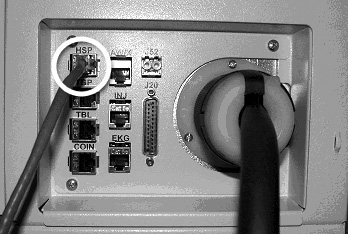
Illustration 3: Attention Screen
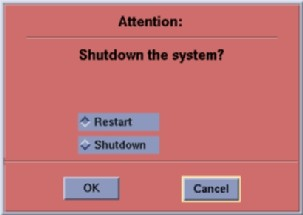
Illustration 4: Power Switch

Illustration 5: Display Monitor Prompt Window

Illustration 6: Warning Box

Illustration 7: CT Software Installation Window

Illustration 8: Install INFO Decision Box

Illustration 9: Install INFO Valid System State Box

Illustration 10: System Settings Screen

Illustration 11: Preferences Settings Screen

Illustration 12: Preferences Settings Screen (SP2)
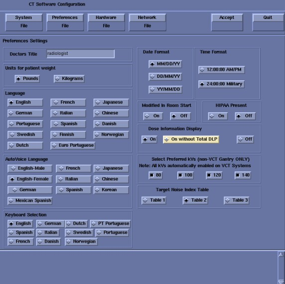
Illustration 13: Main Hardware Screen
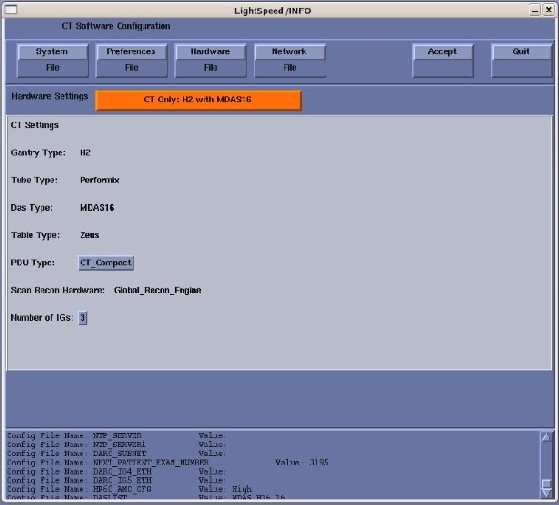
Illustration 14: Select Hardware Configuration.Screen
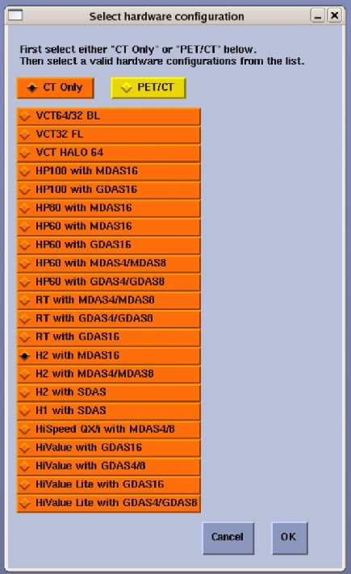
Illustration 15: Example Hardware Settings Screen
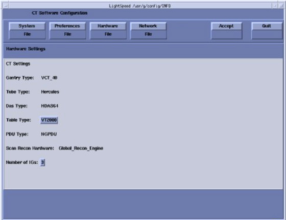
Illustration 16: Table Label/Rating Plate

Illustration 17: Network Settings Screen
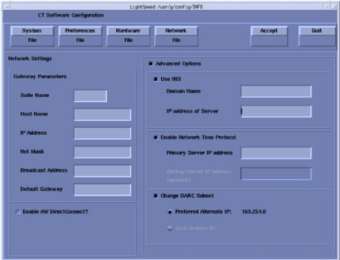
Illustration 18: Station Name - Network Settings Screen

Illustration 19: Install INFO Acceptance Window
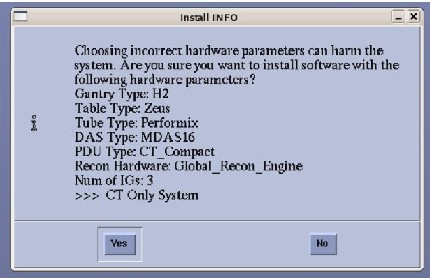
Illustration 20: Apps sh Window

Illustration 21: Reboot Prompt

Illustration 22: CT Software Auto- Start Disabled Box

Illustration 23: DARC Node Attention Window
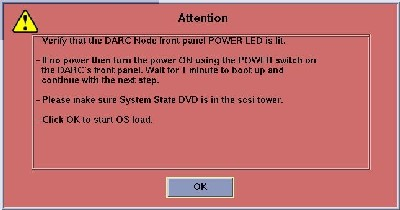
Illustration 24: SOL Service Error Box
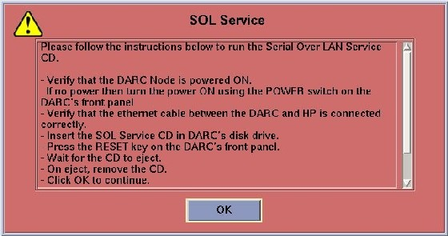
Illustration 25: DARC BIOS Attention Box
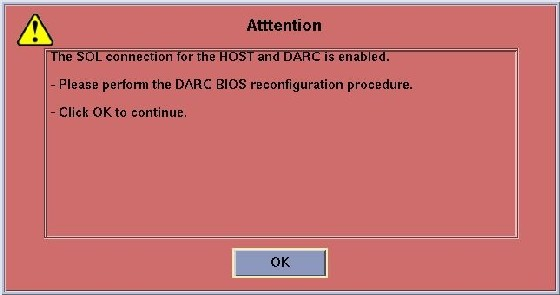
Illustration 26: Example Software Options Screen

Illustration 27: Select Mechanism Box

Illustration 28: Select Device Box
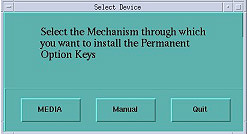
Illustration 29: Image Works Viewer
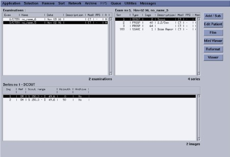
Illustration 30: User Preferences Screen
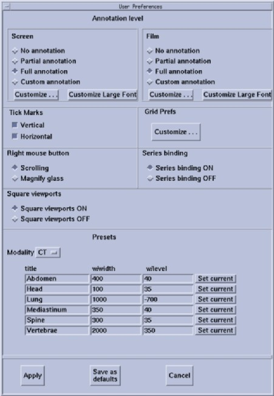
Illustration 31: Large Font Annotation Groups Screen
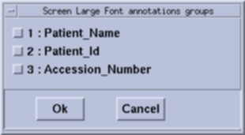
Illustration 32: Example Flash Download Screen

Illustration 33: TIC Flowchart
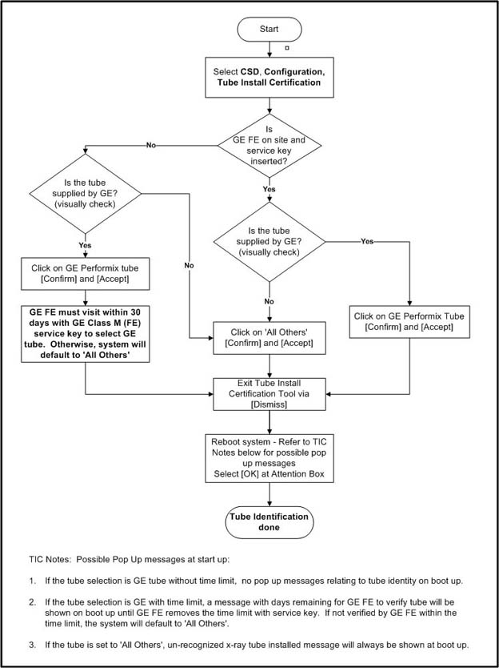
Illustration 34: Tube Install Certification Confirmation Screen
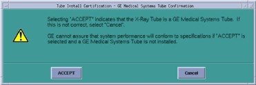
Illustration 35: Autovoice Settings Screen

Illustration 36: Hydraulic Tilt Motor Speed Adjustment
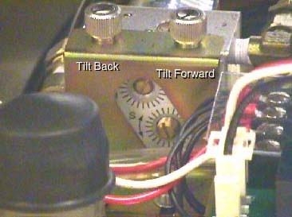
Illustration 37: Service Switch Set to Service Mode

Illustration 38: Gantry Speed Display

Illustration 39: System State Save/Restore Screen

Illustration 40: Save System State Box

Illustration 41: Successful Completion Message

Illustration 42: Restore System State Box
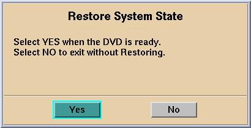